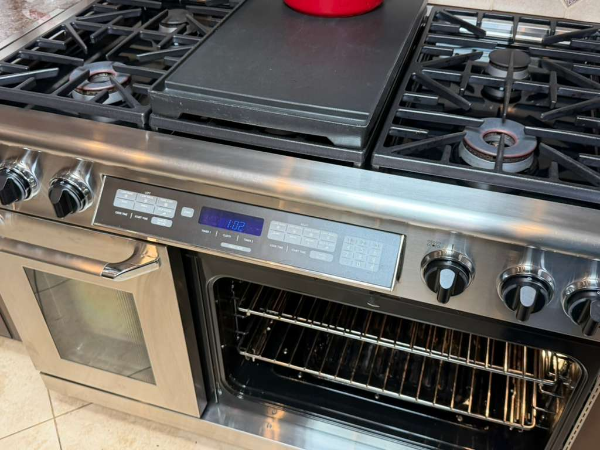

Luxury Appliance Repair in Los Angeles
Eight premium brands. Four cities. In Beverly Hills, Santa Monica, Pasadena, and Manhattan Beach we service premium brands only. Our Los Angeles technician can often be out the same day.
5.0 · 160 Google reviewsMon–Sat, 8am–7pm. Two-hour arrival window. The technician calls before arriving.
See neighborhoods
What to expect
- Flat $99 diagnostic feeApplied toward the repair if you approve the work.
- Written quote firstItemized, before any work starts.
- 90-day parts, 30-day laborWarranty on every repair.
- Same-day serviceCall or request online.
Family-owned since 2017 · Licensed, bonded & insured
Premium-Brand Work We Have Completed
Viking and Dacor repairs our technicians completed in Los Angeles County, and a Wolf range job from Newport Beach. Every photo is our own work, labeled with the city it was actually taken in. We are building the same record in Beverly Hills, Santa Monica, Pasadena, and Manhattan Beach, and we will show those jobs here as they happen.


Wolf · Range · Newport Beach, CA
Pro Gas Range Service
Premium Brands We Service
These are the eight brands we take in Beverly Hills, Santa Monica, Pasadena, and Manhattan Beach: Sub-Zero, Viking, Wolf, Miele, Thermador, Dacor, DCS, and Bosch premium built-in lines. Choose a brand below to see the faults we see most often on that brand, the parts involved, and how the repair usually goes.
These four cities are premium-brand only. If your appliance is one of these eight, the diagnostic is a flat $99 credited toward the repair, and same-day is often open. With Bosch we take the premium built-in lines, Benchmark included, so if you're not sure which Bosch you have, read us the model number and we'll check it with you. If it's a Whirlpool, LG, or Samsung, we'll tell you on the phone rather than after a visit.
Independent repair service. Not affiliated with or endorsed by these manufacturers; brand names and logos are trademarks of their owners.
We service these brands and make no claim of factory authorization. If your appliance is still under manufacturer warranty, call the brand first, because authorized warranty work should cost you nothing.
What We Repair
What we work on in Beverly Hills, Santa Monica, Pasadena, and Manhattan Beach. Each link opens our Orange County guide for that appliance. The faults we see most often and the costs are the same here. The brand list there is wider, because in these four cities we take premium brands only.
Request
Call (949) 629-5365 or use the online form. Tell us the brand, the model if you have it, and what the appliance is doing.Diagnose
Our Los Angeles technician takes the call, same day when the schedule is open, then runs a full diagnostic on arrival, including pulling the unit if the fault requires it.Quote
You get an itemized quote before any work begins, with the $99 diagnostic credited toward it. No surprise charges, and no pressure to proceed.Repair + Warranty
Most repairs finish in one visit. Parts for premium brands occasionally need ordering, and we tell you the wait before you commit. All work carries a 90-day parts and 30-day labor warranty.
Premium Los Angeles Pricing
In Beverly Hills, Santa Monica, Pasadena, and Manhattan Beach we service premium brands only, and the diagnostic fee is a flat $99, the same rate as Orange County, credited toward your repair if you proceed. Most premium-brand repairs land between $250 and $900. Viking igniter and burner work usually runs $200 to $600, while sealed-system refrigeration work on a Sub-Zero built-in runs $1,200 to $2,500. Seniors 60+ and repeat customers get 20% off labor.
Estimates vary by brand, part availability, and diagnosis. Final quote is provided before repair. Full pricing guide
Where Our Premium Service Runs
These four cities share something that matters more than a ZIP code: the kitchens are built around integrated, professional-grade appliances that a general repair call is not equipped for. A panel-ready Sub-Zero column or a Wolf dual-fuel range needs a technician who has pulled one before. We have a technician based in Los Angeles covering all four.
-
Beverly Hills
The Flats · Trousdale Estates · hillside Sunset. From the Flats north of Santa Monica Boulevard up into Trousdale Estates and the hillside streets above Sunset. Full Sub-Zero and Wolf suites are the norm here, often installed as a matched set during a remodel, which means a single failed control board can take out a column and a wine cooler at once. Beverly Hills appliance repair
-
Santa Monica
North of Montana · Ocean Park · Sunset Park. North of Montana, Ocean Park, Sunset Park, and the Wilshire-Montana corridor. Ocean air is hard on condensers and on stainless trim, so we see more coil fouling and more corrosion-related refrigeration faults here than anywhere else on this list. Santa Monica appliance repair
-
Pasadena
Bungalow Heaven · Madison Heights · Oak Knoll. Bungalow Heaven, Madison Heights, Oak Knoll, and the Linda Vista side of the Arroyo. Older homes with beautifully remodeled kitchens, which usually means a professional range dropped into a tight historic alcove. Access and clearance are half the job before a wrench comes out. Pasadena appliance repair
-
Manhattan Beach
Sand · Tree · Hill · Dune Sections. The Sand Section, the Tree Section, the Hill Section, and the Dune Section. Newer construction on narrow lots, with galley kitchens where the built-in refrigerator sits flush between cabinet runs and has to come straight out without touching the millwork. Manhattan Beach appliance repair
Faults We See on Premium Appliances
Professional-grade appliances fail differently than mass-market ones. These are the calls that come in most often.
- Sub-Zero fresh-food side running warm while the freezer stays cold
- Built-in refrigerator icing up behind the rear panel
- Condenser fouled with dust or coastal salt film, unit running constantly
- Viking burner clicking but not lighting, or lighting then dropping out
- Wolf oven not holding temperature or drifting well off setpoint
- Wolf or Dacor convection fan grinding, rattling, or dead
- Thermador cooktop igniter still sparking after the flame is lit
- Miele dishwasher stopping mid-cycle with water in the tub
- Panel-ready dishwasher door sagging or out of alignment with the cabinet
- Oven door hinge springs failed, door heavy or hanging open
- Dual-zone wine cooler holding one zone but not the other
- Built-in ice maker producing nothing or dropping hollow cubes
Some Miele and Bosch dishwashers have a water-hardness setting that should match your local water. Our LA County hard water guide lists hardness for several LA County water providers, including Pasadena's.
Why We Run a Separate Premium Service
A Sub-Zero built-in and a mass-market refrigerator are not the same repair with a different badge on the door. The Sub-Zero runs two sealed systems instead of one, so the fresh-food side can fail while the freezer keeps running perfectly, and a technician who reads that as a single-system fault will chase the wrong part for an hour. Viking and Wolf ranges carry spark modules and heavy oven doors on sprung hinges that behave nothing like a standard range. Miele writes its own fault codes. These are not harder appliances so much as different ones, and the difference shows up in whether the first visit fixes the problem.
The second difference is physical. Premium kitchens are built around the appliance rather than the other way round. A refrigeration column is set flush into a cabinet run with maybe an eighth of an inch of clearance on each side, sitting on stone or wide-plank hardwood, sometimes with a custom panel and hardware attached to the door. Getting it out and back in without leaving a mark on the cabinetry is a real part of the job, and it is why we quote these calls with more time on the books than an Orange County service call.
So we kept the scope honest instead of stretching an existing service to cover it. In Beverly Hills, Santa Monica, Pasadena, and Manhattan Beach we take premium-brand work only. Our general Los Angeles County service, covering every brand, runs in the Gateway Cities closer to our Stanton base: Pico Rivera, Long Beach, Whittier, Downey, Montebello, Santa Fe Springs, and Norwalk. If you call us about a Whirlpool washer in Beverly Hills, we will tell you plainly that we are not the right shop for it rather than book a visit that wastes your afternoon.
Luxury appliance repair across Los Angeles
Universal Appliances Repair Group Inc. provides luxury appliance repair in Los Angeles, servicing premium brands in Beverly Hills, Santa Monica, Pasadena, and Manhattan Beach. We repair built-in refrigeration columns, professional ranges, rangetops and cooktops, wall ovens, panel-ready dishwashers, wine coolers, and freezers, and in these four cities we service premium brands only.
With a technician based in Los Angeles, same-day service in these four cities is available when that schedule is open, and next-available otherwise, usually within a day or two. Orange County remains our primary service area. Call (949) 629-5365 or book online.
FAQ: Luxury Appliance Repair in Los Angeles
Still have a question? Call (949) 629-5365.
Our premium-brand service covers four Los Angeles County cities: Beverly Hills, Santa Monica, Pasadena, and Manhattan Beach. In these four cities we service premium brands only, and the diagnostic fee is $99. Our general appliance service in Los Angeles County is a separate area covering the Gateway Cities of Pico Rivera, Whittier, Downey, Long Beach, Montebello, Santa Fe Springs, and Norwalk, where we handle every brand. Call (949) 629-5365 and we will tell you honestly which service fits your address.
We service Sub-Zero, Viking, Wolf, Miele, Thermador, Dacor, DCS, and the Bosch premium lines, including Benchmark. That covers built-in and integrated refrigeration columns, professional gas and dual-fuel ranges, rangetops and cooktops, wall ovens, panel-ready dishwashers, and built-in wine storage. If your appliance is a brand outside that list, our premium Los Angeles service is not the right fit and we will say so rather than send a technician on a drive that will not help you.
No. The diagnostic fee is a flat $99 across Orange County and all of Los Angeles County, including Beverly Hills, Santa Monica, Pasadena, and Manhattan Beach, and it does not change with the brand. Premium diagnostics do take longer, since pulling a built-in Sub-Zero column or reading a Viking spark module is not a fifteen-minute check, but you are not charged more for the visit. The fee is flat, never a range, and it is credited toward your repair if you decide to proceed.
Often, yes. We have a technician based in Los Angeles, so same-day appointments in Beverly Hills, Santa Monica, Pasadena, and Manhattan Beach are available whenever that schedule is still open. Two things can push it to the next day: a day that is already booked out, or a part that has to be ordered before the repair can be finished. You get a firm appointment window either way, and a call when the technician is on the way. Call (949) 629-5365 and we will tell you what today actually looks like.
Yes, and it is most of what this service is. Built-in refrigeration columns, integrated dishwashers behind cabinet panels, flush-inset wall ovens, and undercounter wine storage all need to come out of a tight cabinet opening without damaging the surrounding millwork, then go back in level and aligned. We pull, service, and reset these units as a matter of routine, and we protect stone and hardwood floors on the way in and out.
No, and we will not claim otherwise. We service these brands, we carry common parts for them, and premium-brand work is a regular part of what we do, but we are not a factory-authorized servicer for any manufacturer. If your appliance is still under manufacturer warranty, call the brand first, because authorized warranty work will not cost you anything. Once a unit is out of warranty, an independent shop is usually faster to schedule and less expensive.
Most premium-brand service calls land between $250 and $900 depending on the part and the labor involved. Viking igniter and burner work usually runs $200 to $600. Sealed-system refrigeration work on a Sub-Zero built-in, meaning a compressor, evaporator, or refrigerant repair, runs higher, generally $1,200 to $2,500. These are estimates, not quotes. Estimates vary by brand, part availability, and diagnosis. Final quote is provided before repair.
Yes. Every repair carries a 90-day parts and 30-day labor warranty, the same coverage we provide across Orange County. If the same fault returns inside 30 days, we come back and fix it at no additional charge; replaced parts stay covered for 90 days. Your technician goes over the specific warranty terms with the quote, before any work begins.
Premium Appliance Trouble in Los Angeles?
Sub-Zero, Viking, Wolf, Miele, Thermador, Dacor, DCS, and Bosch premium lines in Beverly Hills, Santa Monica, Pasadena, and Manhattan Beach. Same-day when our Los Angeles technician has an opening. 90-day parts / 30-day labor warranty on every job.
Call (949) 629-5365
Request a Repair
Mon–Sat, 8am–7pm